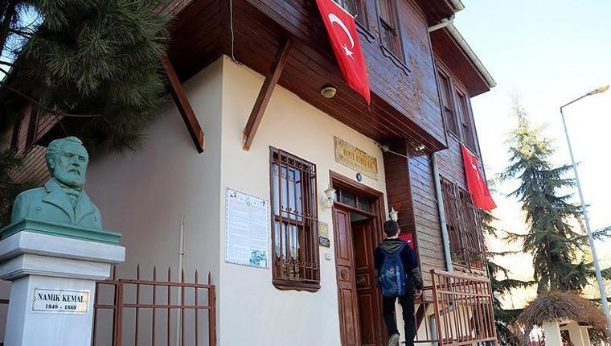

NAMIK KEMAL

Ortacami Mah.Namık Kemal Cad. No:7 TEKİRDAĞ
"İnsan vatanı sever, çünkü hürriyeti, rahatı, hakkı vatan sayesinde kaimdir."
Namık Kemal (21 Aralık 1840; Tekirdağ - 2 Aralık 1888; Sakız Adası), Türk milliyetçiliğine ilham kaynağı olmuş, Genç Osmanlı hareketi mensubu yazar, gazeteci, devlet adamı ve şairdir.
Yurtseverlik, hürriyet, millet kavramlarına bağlı bir Tanzimat Devri aydınıdır. Bu kavramları Türk fikir hayatına ve edebiyatına sokan kişi kabul edilir
Heyecanlı, kavgacı kişiliği, akıcı, parlak üslubu nedeniyle devrinin diğer yazarlarından daha fazla tanındı.
“Vatan Şairi” ve “Hürriyet Şairi” olarak anılan Namık Kemal, şiirin yanı sıra tenkit, biyografi, tiyatro,
roman, tarih ve makale türlerinde eserler verdi. Özellikle Türk edebiyatının ilk edebi romanı olan İntibah ve batılı anlamda Türk edebiyatının sahnelenen ilk tiyatro eseri olan Vatan yahut Silistre eserleriyle ünlüdür.
Türkiye’nin kurucusu Mustafa Kemal Atatürk’ü eserleri ve fikirleriyle etkiledi.